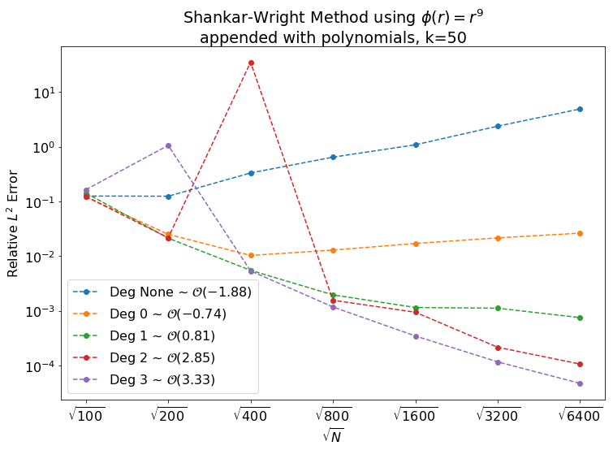

We discussed the to-do lists that Grady made in preparation for the upcomming SIAM CSE19.
- Sage's Tasks
- For Poster
- Code
- Writing
- Sage's List
- Meeting Followup
- Convergence Plots for Shankar-Wright and Tangent Plane methods
- References
Sage's Tasks
For Poster
Shankar-Wright RBF-FD MethodAdapt for singular stencilsTangent Plane MethodImplementInclude Polynomials- Symmetric RBF-OGr
- Implement
- Include Polynomials
- MLS on tangent-plane
- Solutions on a Torus
Code
- Account for the hessian to fix the code for the RBF Symmetric OGr method.
- Implement time-stepping.
- Test RBF OGr interpolation.
- Test surface diffusion methods on a torus.
- Become familiar with Varun's repo.
Look into the -fOpenMP flag.
Writing
- Write Radial Basis Function Article
- Write the theorem for exactness.
- Write RBF-FD article.
- Write RBF-FD Projection Method article.
- Write RBF-OGr article.
- Add local approximation to RBF Interpolation article.
Sage's List
- Pick some test problems to solve on surfaces. I suggest
- Diffusion of sum of Gaussians
- Diffusion on torus
- Implement local OGRr method for surfaces
- Use exact normals
- Generate convergence results on the test problems from 1.
- Examine eigenvalues of the discrete Laplace-Beltrami operator.
- Implement Shankar-Wright RBF-FD method using RBF+polynomials (in $\RR^3$)
- Use exact normals
- Generate convergence results on the test problems from 1.
- Examine eigenvalues of the discrete Laplace-Beltrami operator.
- Implement RBF-FD tangent-plane method using RBF+polynomials (in $\RR^2$)
- Use exact normals
- Generate convergence results on the test problems from 1.
- Examine eigenvalues of the discrete Laplace-Beltrami operator.
- Implement moving least squares (MLS) method on tangent-plane using polynomials (in $\RR^2$)
- Use exact normals
- Generate convergence results on the test problems from 1.
- Examine eigenvalues of the discrete Laplace-Beltrami operator.
- Create poster with results from 2-4
- Include 5 if time permits.
Meeting Followup
Convergence Plots for Shankar-Wright and Tangent Plane methods
The following plots are show the error in the computation of the derivative of the sum of seven arbitrarily placed Gaussians on the sphere. When a shape parameter was required, it was optimized so that the condition number of the RBF matrix was roughly $10^{12}$.
By Polynomial Degree
The error for degree 2 at $\sqrt{N}=\sqrt{400}$ is interesting. That it is only seen for degree 2 polynomial terms (the lowest degree for which the augmented RBF matrix will be singular) suggests that there may be some error in the method/code, however, in a later plot we see that the spike also occurs when using spherical harmonic terms, for which the matrix is not singular.
By Method
Note that (s) denotes that only spherical harmoics were used while (p) denotes that all polynomials up to a given degree were used.
Again we see the spike in error at $\sqrt{N}=\sqrt{400}$. Examining the eigenvalues we see that there is an eigenvalue with large real component.
| surface | nodeset | N | k | method | rbf | epsilon | poly_type | deg | rel_L2_error | max_error | Re_eig | |
|---|---|---|---|---|---|---|---|---|---|---|---|---|
| 3 | S | spiral | 100 | 50 | SWM | r^9 | None | p | 2 | 0.122685 | 2.554740 | 1.433287e-13 |
| 4 | S | spiral | 100 | 50 | SWM | r^9 | None | s | 2 | 0.122685 | 2.554740 | 8.908315e-15 |
| 9 | S | spiral | 200 | 50 | SWM | r^9 | None | p | 2 | 0.021647 | 0.379995 | 3.028059e-13 |
| 10 | S | spiral | 200 | 50 | SWM | r^9 | None | s | 2 | 0.021647 | 0.379995 | 7.273739e-14 |
| 15 | S | spiral | 400 | 50 | SWM | r^9 | None | p | 2 | 34.993947 | 2158.137251 | 9.762728e+04 |
| 16 | S | spiral | 400 | 50 | SWM | r^9 | None | s | 2 | 34.993950 | 2158.137419 | 9.762728e+04 |
| 21 | S | spiral | 800 | 50 | SWM | r^9 | None | p | 2 | 0.001562 | 0.028865 | -5.139624e-12 |
| 22 | S | spiral | 800 | 50 | SWM | r^9 | None | s | 2 | 0.001562 | 0.028865 | -1.126623e-14 |
| 27 | S | spiral | 1600 | 50 | SWM | r^9 | None | p | 2 | 0.000944 | 0.027381 | -3.229788e-11 |
| 28 | S | spiral | 1600 | 50 | SWM | r^9 | None | s | 2 | 0.000944 | 0.027381 | -3.468708e-12 |
| 33 | S | spiral | 3200 | 50 | SWM | r^9 | None | p | 2 | 0.000216 | 0.004452 | -9.367603e-11 |
| 34 | S | spiral | 3200 | 50 | SWM | r^9 | None | s | 2 | 0.000216 | 0.004452 | 7.241566e-14 |
By Stencil Size
We expect that both methods will increase in accuracy as the stencil size increases, particlarly if we use RBFs with a shape parameter, however with the Tangent Plane Method we expect that when the stencil becomes large enough, the stencil will not be roughly co-planer and the projection will be a poor approximation of the stencil.
As predicted, for the Tangent Plane method there is an optimal stencil size (perhaps a stencil radius).
References